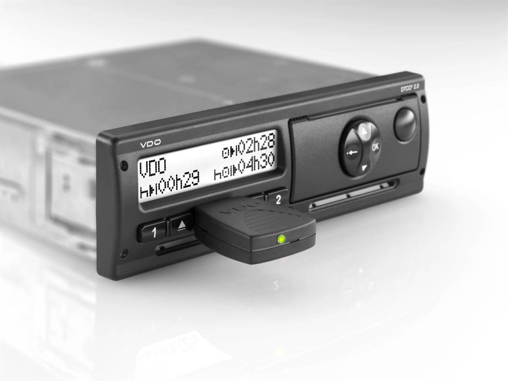
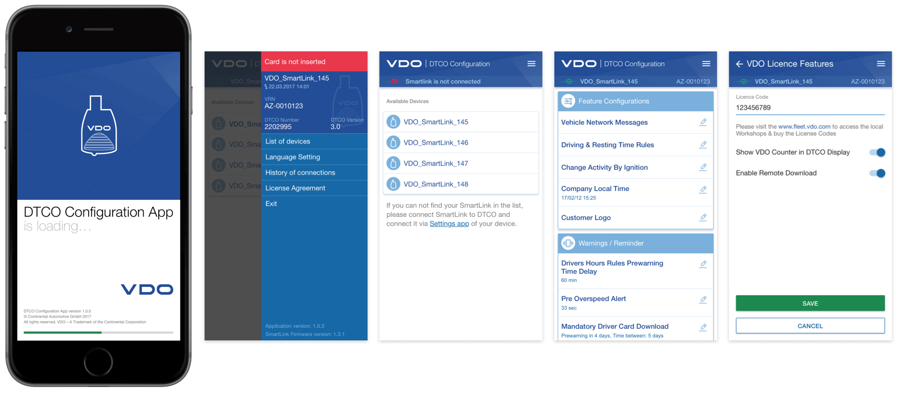
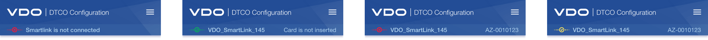

Менеджеры настраивают тахографы партиями по 10—20 штук под нужды заказчиков: загружают логотипы для отчётов, выставляют часовой пояс, проверяют настройки отслеживания работы и отдыха.
Настройка занимает много времени, если её делать с помощью аналоговых кнопок тахографа
Конфигуратор (DTCO Configuration App) упрощает настройку цифровых тахографов. Менеджер подключает к тахографу беспроводной передатчик Смартлинк, выбирает тахограф и настраивает его с телефона.
Программа предупреждает пользователя, если в тахограф не вставлена рабочая карточка менеджера или потеряно соединение со смартлинком.
Разработка пользовательских сценариев использования, отрисовка интерфейса системы и макетов в Sketch, контроль отрисовки интерфейса под Андроид и АйОс.